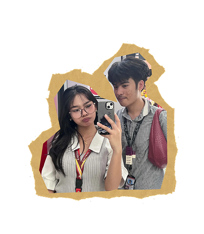
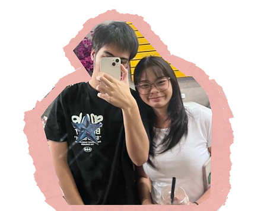
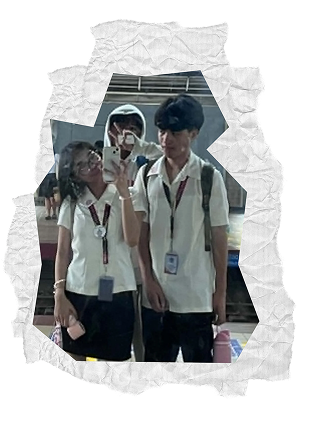
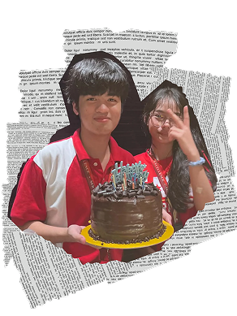
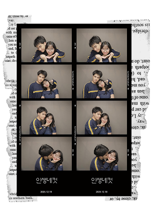

This time, everyone knows about us. I’m officially recognized by your family, and I even had your father’s permission to take you out.
For me, this was the most special day of that month. Not only did we hang out, but we also had one of the most memorable dates together.
I appreciated everything about that day, especially the time we spent bonding together. It reminds me of the song “Magnolia” by Magnolia Celebration.

This was our first hangout after New Year’s. Back then, we used to hang out secretly and always had to be cautious of our surroundings, worried that one of your family members might catch us. It was risky and funny at the same time. We originally planned to stay at Klasik’s, but it was already closed, so we ended up looking for another place to hang out. Eventually, we found ourselves at Garrison Cafe. I was still learning more about you with every moment we spent together. There was still so much about you that I wanted to discover, and just like the song **“About You” by The 1975**, you were someone worth learning about and getting to know better.

This photo was taken almost a year ago This photo was taken almost a year ago. I couldn’t believe that our journey started here. Even though we were just friends at the time, somehow, I already felt something special in those moments. It almost felt too good to be true. I never expected that we would become this close, especially after all the doubts and fears we had before. I’m really grateful that I was able to get close enough to you and become a part of your life. Looking back, I realize that those simple moments were the beginning of something I never expected but will always cherish. It reminds me of the song “Can’t Help Falling in Love” by Elvis Presley.

This was my birthday, and if you weren’t there, my day wouldn’t have felt complete. Without you, it would have just been another normal day, as usual. I was so happy that you gave your time to celebrate with me, even though your parents were calling you at that time. I was genuinely happy when you surprised me. For a while, I felt truly appreciated because of the little gestures you gave me. After we started talking more and more, the song “Balisong” by Rico Blanco kept repeating in my head over and over again. Somehow, you remind me of that song.

This time, we didn’t hide what we had in front of our classmates anymore. We started showing our love and affection for each other, giving everything we had and letting our feelings speak for themselves. By then, we both knew that what we felt was true and genuine. This became one of the most memorable times of the year for me. The song “Last Night on Earth” by Green Day felt like it was dedicated to you. Every time I hear that song, you’re always the first person who comes to my mind.